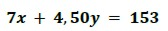
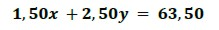
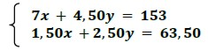

Sistemas de ecuaciones lineales
Un grupo de alumnos de jardín de infantes va al cine junto con algunas madres y la maestra. La entrada de los adultos cuesta $7 y la de los niños, $4,50. A la salida van todos a tomar algo a una confitería. Todos los adultos toman café, que cuesta $1,50; los niños toman una gaseosa, que cuesta $2,50. Si pagaron $153 en el cine y $63,50 en la confitería, ¿cuántos niños y cuántos adultos fueron al cine?
Analicemos en principio qué queremos averiguar: necesitamos saber cuántos adultos y cuántos niños hay.
Llamamos:
x: a la cantidad de adultos
y: a la cantidad de niños
Sobre x e y tenemos ciertas condiciones:
“La entrada de los adultos cuesta $7 y la de los niños, $4,50”. Si pagaron $153 en el cine, podemos plantear la siguiente ecuación:

“Todos los adultos toman café, que cuesta $1,50, y los niños toman gaseosa, que cuesta $2,50”. Pagaron en la cafetería $63,50. Con estos datos podemos plantear otra ecuación:

Como tenemos un par de ecuaciones lineales con dos incógnitas (en nuestro ejemplo x e y), que consideramos simultáneamente, decimos que forman un sistema.

Al modelizar nuestro problema, tenemos dos ecuaciones lineales con dos incógnitas, que son consideradas simultáneamente. Por ello decimos que forman un sistema de ecuaciones.
Resolver un sistema de ecuaciones lineales con dos incógnitas significa hallar, si es que existen, todos los puntos que tienen en común las rectas del sistema.

Obra publicada con Licencia Creative Commons Reconocimiento Compartir igual 4.0